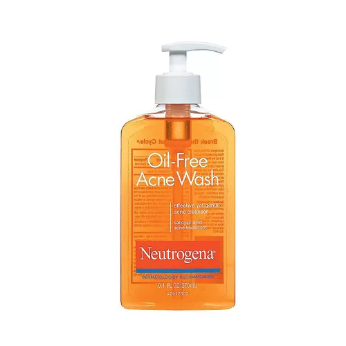

Oily Skin is excess oil on the face that gives someone with this skin type a shiny or greasy appearance. If left untreated pores can become clogged and large and dead skin cells may accumulate. You can tell if you have oily skin if you notice certain things such as your face is shiny and usually appears greasy later on in the day, makeup doesn’t stay on and seems to “slide” off, the oilier areas of your face have blackheads, pimples or other types of acne, and pores are visibly enlarged, especially on your nose, chin and forehead. Oily skin is normally passed down in families, but oily skin can also be because of high hormone levels. For example during puberty, a menstrual cycle, pregnancy or menopause, as sebaceous glands become more active during these times. Sebaceous glands are in the skin and secrete an oily substance called sebum. Sebum lubricates the skin, protecting it from drying out or becoming irritated. This oil is secreted through the pores. When this process goes well, sebum not only lubricates your skin, but it also removes dead skin cells and other irritants from your pores. When over-active sebaceous glands produce too much sebum, it causes too much oil on the skin and the pores become clogged.
Here I will be providing links and pictures of affordable products that might help battle your oily skin problems.

This is an acne patch : The stickers absorb the pus from your pimples and when you take off the sticker the next morning or in a few hours, depending on the nature of the pimple, the sticker turns white after it absorbs the pus and your pimple deflates.

This is a toner : The alcohol in witch hazel helps remove excess oil and dirt on the skin, giving the skin a matte appearance, so its ideal for oily or acne prone skin. Witch hazel also works as a toner to hydrate and moisturize.
This is an oil free cleanser : This water-like cleansing oil washes away excess sebum and blackheads that are stuck inside pores without leaving a tight or dry feeling after cleansing.
This is an oil removing wipe : These wipes soak up excess oil and remove shine from your face, these sheets can be used easily around your nose and other oily areas of your face. Can be used to remove oil and shine throughout the day.

Its best apply a non-comedogenic moisturizer on your face after using African black soap because it can be drying. This is an all natural soap and if you have more sensitive skin then i would recommend using the shea moisture black soap or something similar to that instead of the natural black soaps.
This is a face mask : Using an Aztec clay mask for acne will help your skin to unblock its sebaceous glands which leads to acne, disinfect the pores which will kill the acne-causing bacteria from sebum build-up, and help to dry out and heal up whiteheads, blackheads, pimples, and other types of blemishes.
This is an oil-free moisturizer : Oil-free moisturizer keeps your skin clear and less oily, hydrating your skin can help oily skin produce less oil. Applying an oil-free moisturizer can help you balance your skin, preventing an increase in oil, and giving your skin hydration to prevent it from drying out. DONT FORGET TO GET A MOISTURIZER WITH SPF IN IT !!